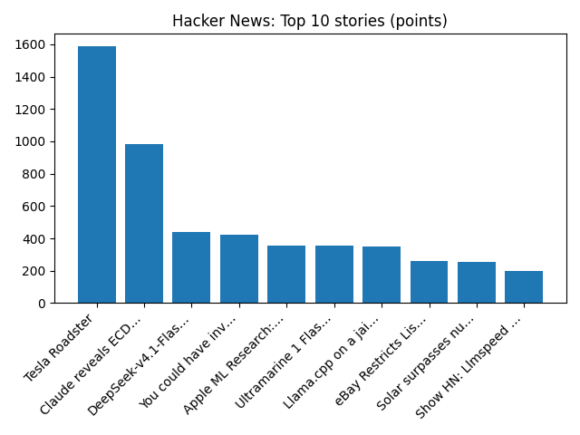

'Wait Wait' for October 17, 2026: We celebrate fall with our coziest guests!
NPR — Science
YOUR DAILY INTELLIGENCE BRIEF · 2026-10-17
Global watch: 'Wait Wait' for October 17, 2026: We celebrate fall with our coziest guests!, Pope Leo returns to Vatican four days after cancer surgery - Reuters.
Northern Virginia: New Nor'easter Forms Off Atlantic Coast: How It Could Impact VA - Patch, Frost Advisory Issued For Parts of Maryland and Northern Virginia - The MoCo Show -.

Global coverage includes 'Wait Wait' for October 17, 2026: We celebrate fall with our coziest guests!; Pope Leo returns to Vatican four days after cancer surgery - Reuters; Scuffles and fires break out as protesters rally across France, joining students. Local coverage includes New Nor'easter Forms Off Atlantic Coast: How It Could Impact VA - Patch; Frost Advisory Issued For Parts of Maryland and Northern Virginia - The MoCo Show -.

Ian Kilgour
Ian Kilgour (23 October 1900 – 20 April 1977) was a Scotland international rugby union player.
https://en.wikipedia.org/wiki/Ian_Kilgour
Runs so far today: 2